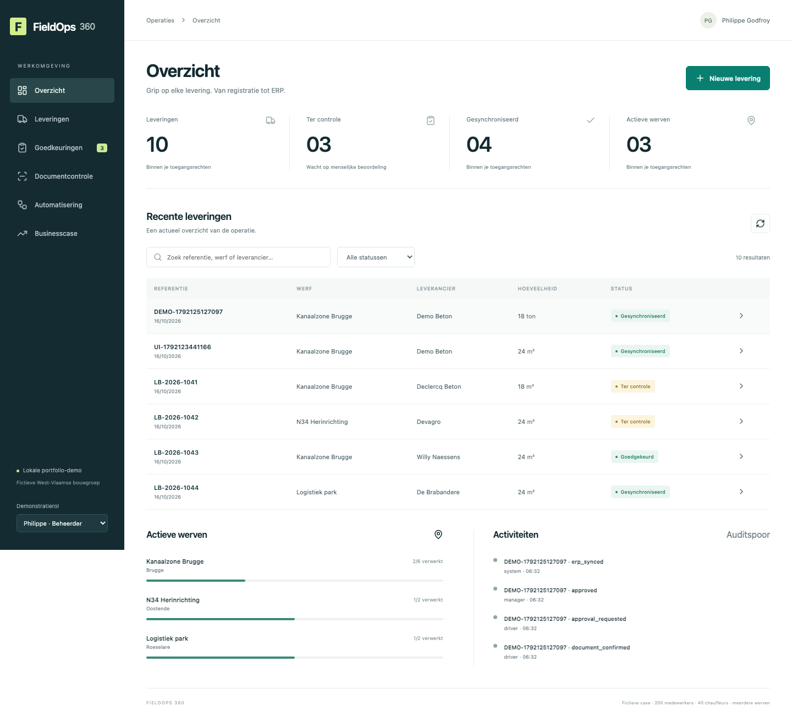

Grip op elke levering.
Van de werf tot het ERP.
Een uitgewerkte digitaliseringscase voor een fictieve West-Vlaamse bouwgroep. Met mobiele registratie, echte documentherkenning, onafhankelijke goedkeuring en betrouwbare ERP-overdracht.
Bekijk de demonstratie ↓Zelf lokaal draaien ↗
De lokale webdemo werkt en is getest. De mobiele Canvas-collectieapp is verpakt; Studio-validatie staat open. De volledige native Power Platform-installatie wacht op Dataverse-rechten. Bekijk het bewijs en de open punten.
Een levering, van begin tot einde.
Een echte opname van de lokale demo: bonfoto lezen, menselijk bevestigen, onafhankelijk goedkeuren en één ERP-ontvangst. Nederlandse ondertiteling beschikbaar via CC.
Het zakelijke probleem
200 medewerkers, 40 chauffeurs en meerdere werven. Papier, Excel en e-mail zorgen voor dubbel werk en versnipperde informatie. FieldOps brengt registratie, beoordeling en overdracht in één controleerbare route.
De technische keuzes
Een reproduceerbare React/Node-demo met relationele opslag, serverrechten, echte ML-OCR en een duurzame integratiewachtrij. Native Power Platform-bronnen worden afzonderlijk gevalideerd, met een expliciete lijst van open opleverpunten.
Meer dan een mooi scherm.
Business Analysis en processen
Discovery-workshop, stakeholdermap, AS-IS/TO-BE BPMN, requirements, user stories en acceptatiecriteria.
Betrouwbaarheid en menselijke controle
Afwijkingsreden, onafhankelijke goedkeuring, verplichte OCR-review, idempotentie, retries, foutmeldingen en auditspoor.
Implementatie en adoptie
Testplan, UAT-draaiboek, handleiding, DEV/TEST/PROD-plan, rollback, pilotaanpak en een ROI-model met toetsbare aannames.